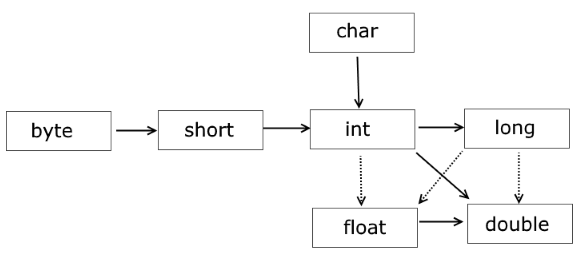

int a = 4;
byte b = (byte)a; // преобразование типов: от типа int к типу byte
System.out.println(b); // 4

Некоторые преобразования могут производиться автоматически между типами данных одинаковой разрядности или даже от типа данных с большей разрядностью к типа с меньшей разрядностью. Это следующие цепочки преобразований: int -> float, long -> float и long -> double. Они производятся без ошибок, но при преобразовании мы можем столкнуться с потерей информации.
Преобразования при операциях
Нередки ситуации, когда приходится применять различные операции, например, сложение и произведение, над значениями разных типов. Здесь также действуют некоторые правила:
· если один из операндов операции относится к типу double, то и второй операнд преобразуется к типу double
· если предыдущее условие не соблюдено, а один из операндов операции относится к типу float, то и второй операнд преобразуется к типу float
· если предыдущие условия не соблюдены, один из операндов операции относится к типу long, то и второй операнд преобразуется к типу long
· иначе все операнды операции преобразуются к типу int
byte a = 3;
short b = 4;
byte c = (byte)(a+b);
Две переменных типа byte и short (не double, float или long), поэтому при сложении они преобразуются к типу int, и их сумма a+b представляет значение типа int. Поэтому если затем мы присваиваем эту сумму переменной типа byte, то нам опять надо сделать преобразование типов к byte.
Если в операциях участвуют данные типа char, то они преобразуются в int:
int d = 'a' + 5;
System.out.println(d); // 102